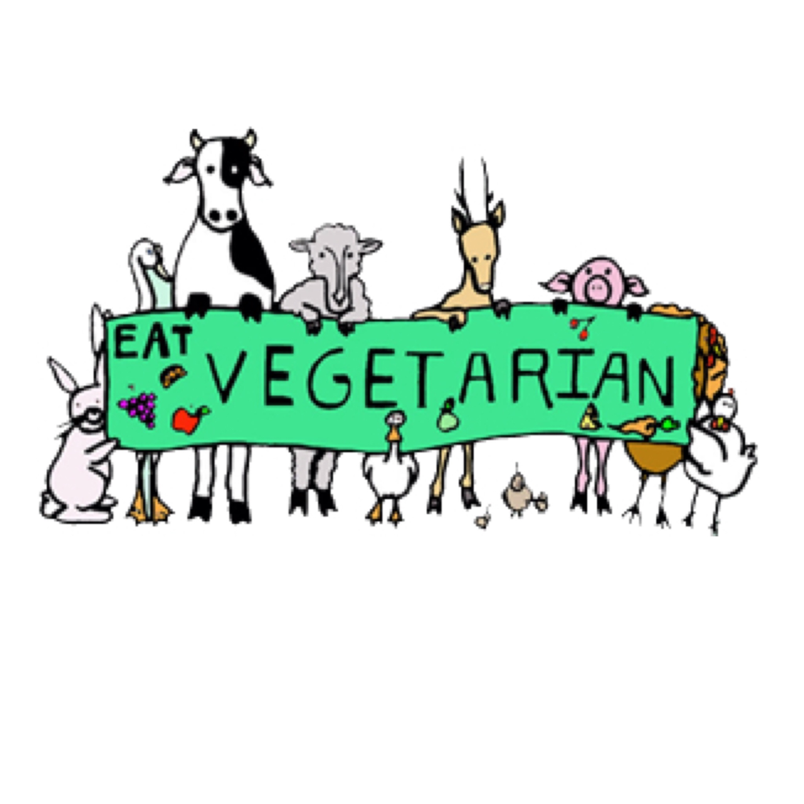

Home | Basic Info | Food and Meal Ideas | Social Implications

When you eat out, you will have to search through menus for vegetarian or vegan options. There will be a few good things that you can eat. But no matter where you are, you will be able to eat something, like rice, salads or a pasta dish. But, even if there’s nothing on the menu for you, you can ask the chef to make something special.
Although the lifestyles are becoming more mainstream, there is still a negative stereotype. This will happen more if you are vegan, rather than vegetarian. Vegans are stereotyped as pale, sickly, angry, preachy outcasts. When people who don’t know you well hear that you are vegan, they may assume that you fit the vegan stereotype. Either grow thicker skin or just ignore the negativity thrown your way.
People will endlessly question you. Some of these questions are annoying. For example “don’t plants have feelings too?” or “where do you get your protein?” "Are you getting enough Vitamin xxx?"
There are plenty of options to get your protein goals, and many foods have the necessary vitamins. Supplements are also an option for both.
At the end of the day, never come off as preaching. People are turned off by preaching. Have interests aside from vegetarianism, so that others see that vegetarians and vegans are normal, interesting people. People may notice your lifestyle isn't that different or even start to agree with your reasoning and try it themselves. Remembere, everyone lives differently.